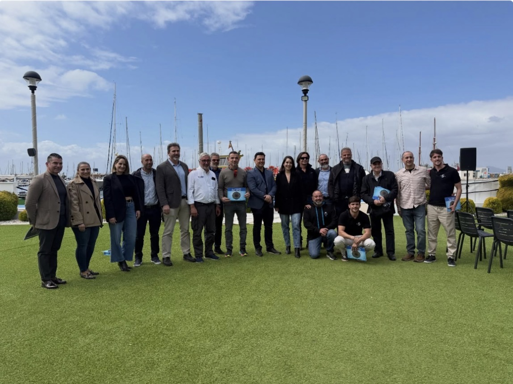

Diseño · 2025
Guía San Javier
↓
65 páginas · 7 inmersiones · diseño y edición completa
Cliente
Ayuntamiento de San Javier · Turismo
Año
2025
Categoría
Diseño
Alcance
Diseño editorial · Maquetación bilingüe · Edición e ilustración
Punta de León·
La Gruta·
La Virgen·
Los Callejones·
La Laja·
El Anfiteatro·
Las Columnas·
Punta de León·
La Gruta·
La Virgen·
Los Callejones·
La Laja·
El Anfiteatro·
Las Columnas·
Editorial
Diseño y edición de la Guía de Inmersiones de San Javier: 7 inmersiones, 65 páginas, hecha desde cero.
Partimos de un folio en blanco: rejilla, tipografía, sistema de color, portadillas de cada inmersión, tablas de datos técnicos, iconografía, ilustraciones batimétricas y maquetación bilingüe español–inglés. Todo el material fotográfico y de vídeo es propio, capturado en Isla Grosa, El Farallón y La Laja.
El sistema editorial
Arrastra para recorrer las páginas →
Las 7 inmersiones
Elige una inmersión
{{ activeDive.kicker }}
{{ activeDive.name }}
{{ activeDive.body }}
Profundidad
{{ activeDive.depth }}
Nivel
{{ activeDive.level }}
Páginas de la guía
{{ activeDive.pages }}
Cómo hicimos la guía
Pulsa cada fase
{{ activeStepBody }}
Siguiente proyecto
Ver todos los proyectos →
{{ lightboxLabel }}